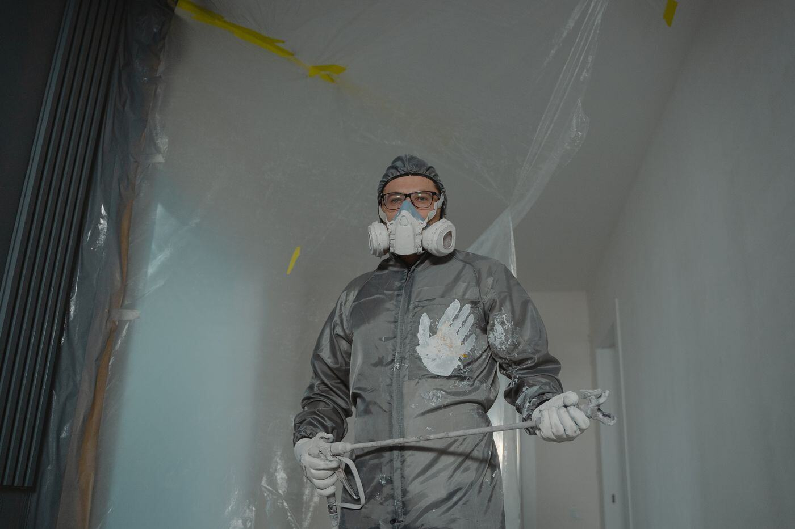
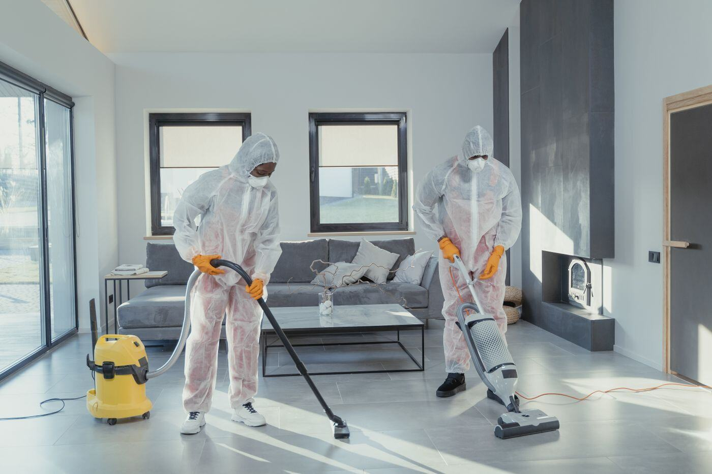
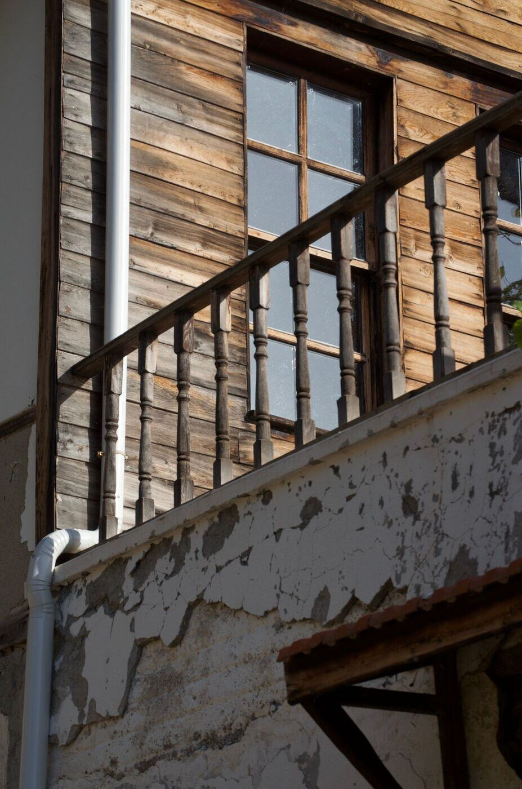
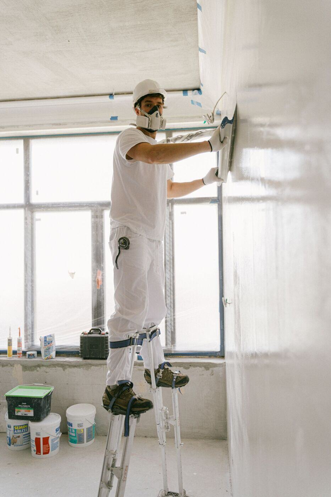
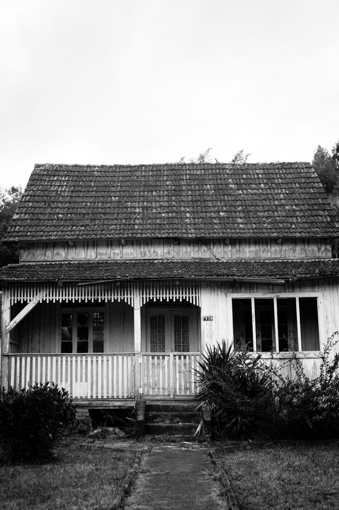
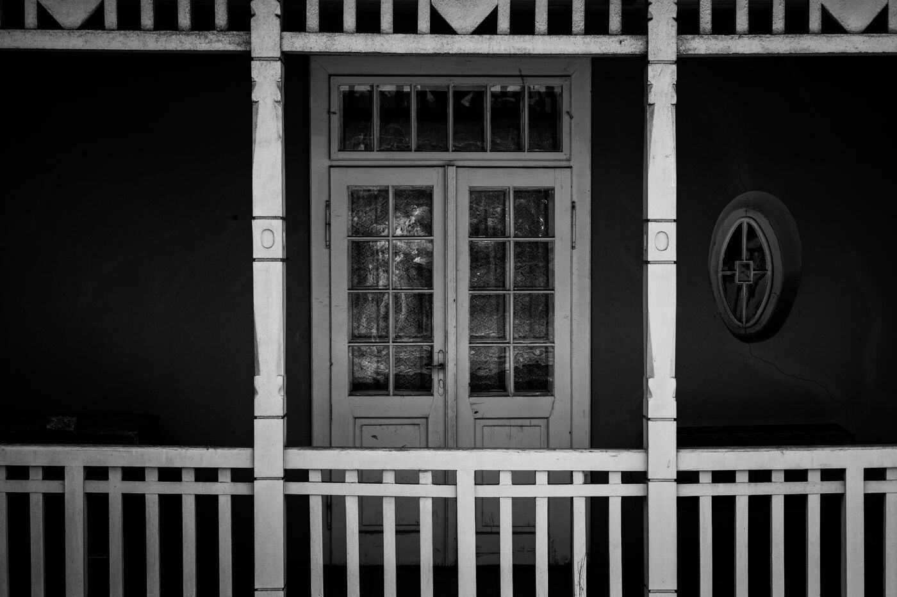

Lead Abatement in Philadelphia, PA
Much of Philadelphia's housing predates the 1978 ban on lead paint, which makes old coatings a fair assumption until a test says otherwise. Whether you found peeling paint on a porch, received a rental certification notice or plan to remodel, start by describing what you see and we will point you to the right lead service.
Request a call
Describe what you are seeing in the house and we will follow up. Prefer to talk? Call (877) 378-5996.
What toxic lead abatement actually covers
Most people searching for lead abatement are really trying to answer a smaller question first: does my house have a lead problem, and what kind? The word covers a chain of separate services. A lead paint inspection finds lead paint. A risk assessment finds hazards. Abatement itself, meaning lead paint removal, replacement, enclosure or encapsulation, is the permanent fix, and clearance testing confirms the dust is gone afterward.
Philadelphia adds a local layer. The city's Lead Paint Disclosure and Certification Law requires owners of pre-1978 rentals to have the property certified lead-safe or lead-free by a dust wipe technician before signing a lease or holding a rental license. Rental owners should confirm the current rules with the city rather than rely on an old checklist.
Pennsylvania also controls who may do this work. The Department of Labor and Industry certifies lead contractors and requires a certified supervisor behind each firm, so one of the first questions to ask anyone is which credential fits your job.

What are you dealing with?
Most people do not know which lead service they need. Pick the situation that sounds like yours.
Lead services in Philadelphia
Each page explains what the service is, when it is used and what to ask before you hire.

Lead Paint Testing and Inspection
Find out where lead paint is before a remodel, home purchase or change of use.
Lead Risk Assessment
Understand hazards from paint, dust and soil, not simply whether old paint contains lead.

Lead Dust and Soil Hazard Control
Investigate dust after renovation and contaminated bare soil near painted exteriors.

Lead Paint Removal and Abatement
Plan permanent hazard control with a written scope, containment and clearance.

Lead Paint Encapsulation and Enclosure
Explore specialized coatings or barriers when the surface is suitable.
Lead-Safe Window and Door Replacement
Address friction dust at old painted sashes, frames and doorways.

Lead Clearance Testing
Get the post-work documentation appropriate to the project, without confusing it with a paint inspection.

Rental Lead Certification and Planning
Organize a Philadelphia rental project around the exact certification the city asks for.
Cities around Philadelphia we cover
Local pages for 16 cities across Pennsylvania, New Jersey and Delaware within a 40-mile radius of Philadelphia, each written around that city's history and housing.
Ambler
Lead paint testing and abatement for Ambler homes.

Bristol
Lead paint testing and abatement for Bristol homes.

Burlington
Lead paint testing and abatement for Burlington homes.

Camden
Lead paint testing and abatement for Camden homes.

Chester
Lead paint testing and abatement for Chester homes.
Coatesville
Lead paint testing and abatement for Coatesville homes.
Conshohocken
Lead paint testing and abatement for Conshohocken homes.

Doylestown
Lead paint testing and abatement for Doylestown homes.

Lansdale
Lead paint testing and abatement for Lansdale homes.

Media
Lead paint testing and abatement for Media homes.

Norristown
Lead paint testing and abatement for Norristown homes.

Phoenixville
Lead paint testing and abatement for Phoenixville homes.

Pottstown
Lead paint testing and abatement for Pottstown homes.

Trenton
Lead paint testing and abatement for Trenton homes.

West Chester
Lead paint testing and abatement for West Chester homes.

Wilmington
Lead paint testing and abatement for Wilmington homes.
Guides for figuring it out
Peeling Paint or Window Dust?
A practical way to choose testing, a risk assessment or lead-safe renovation.
What Affects Abatement Cost
Compare written scopes rather than misleading per-room price promises.
Abatement or Renovation?
Understand the difference before you hire for a Philadelphia property.
Articles on Philadelphia's older buildings
Neighborhood-by-neighborhood pieces on planning lead-safe work, from Fishtown rowhouses to Center City conversions.
Fishtown: Rowhouse Lead Dust
A Fishtown guide to friction dust, painted sashes and choosing the right lead service.
Germantown: Historic House Lead Planning
How to plan lead work in Germantown without flattening its historic detail.
Chestnut Hill: Lead-Safe Renovation
A Chestnut Hill renovation guide: sequencing testing, protection and lead-safe work.
Center City: Business District Lead Planning
Paint disturbance, conversions and changing occupancy in Philadelphia's business district.
Common questions
How do I know if I need lead abatement or just testing?
If you do not yet know whether the paint contains lead, start with testing. Abatement comes after an assessment finds a hazard. The guide on abatement vs lead-safe renovation matches common situations to services.
Does my Philadelphia house have lead paint?
If it was built before 1978, it might. Much of Philadelphia's housing predates the 1978 ban, and the older the house, the more likely lead paint is. Testing is the only way to know which surfaces carry it.
Is lead abatement different from a renovation?
Yes. Abatement is done to permanently eliminate lead hazards. Renovation disturbs paint as a side effect and needs lead-safe work practices.
Who can test for lead in Pennsylvania?
Pennsylvania certifies lead inspectors, risk assessors and abatement contractors through the Department of Labor and Industry, so ask which credential applies to your job before you schedule.